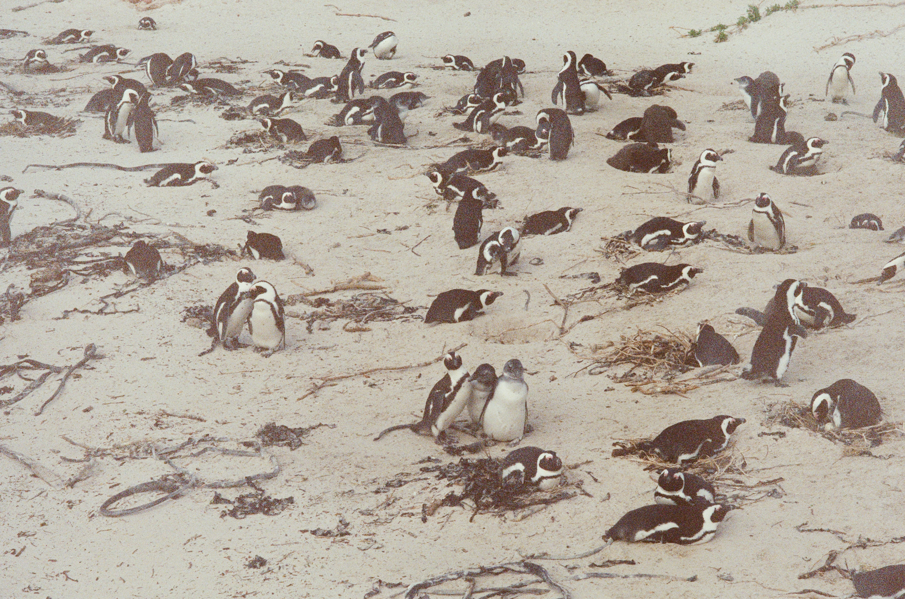

Yuri Penguin
"The God sent creature"

Yuri penguin with friends and family
Here's a biogragraphy of Yuri
- 1990 - Yuri penguin was born in Vienese, Italy.
- 1991 - Got adopted into an italian family in mowa.
- 1994 - made her first appearance to the outside world, when she first went out to a picnic with the italian family
- 1997 - joined an health organisation
- 2000 - got her first major award as the best voluntarily health officer
- 2005 - also, got a recognition from an italian group and the most decorated pets ever history
- 2009 - she then got a non-govrnment organisation named after "YURI HOME OF HEALTH".
- 2011 - decided to g0 back to where she originated though some dignitaries were not happy with this but they have no choice.
- 2015 - the government of Vienese, launched a book Yuri the humble penguin and also a statue of yuri at the center of the city.
- 2018 - Yuri retired from being an Ngo ambasador and went to a village in vieniese
- 2020 - report as it that she got re-united with so many penguin of its kind
- 2022 - Yuri still alive and kicking
"Yuri's life and achievement are testimony to the far-reaching contribution that one man's towering intellect, persistence and scientific vision can make to human peace and progress." -- Italy Prime Minister Mustapha Seego
If you have time, you should read more about this incredible human being on his Wikipedia entry.